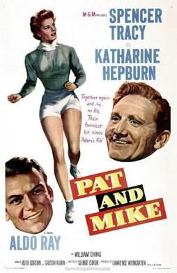

Pat and Mike

Starring: Katharine Hepburn, Spencer Tracy, Aldo Ray
Director: George Cukor
Writer: Ruth Gordon, Garson Kanin
Producer: Lawrence Weingarten
Pat and Mike is a 1952 American romantic comedy film starring Spencer Tracy and Katharine Hepburn. The movie was written by Ruth Gordon and Garson Kanin, and directed by George Cukor. Cukor directed The Philadelphia Story (1940) with Hepburn, and Cukor, Gordon and Kanin teamed with Hepburn and Tracy again for Adam's Rib (1949).
Trivia
- Nominated for: Academy Award for Best Writing, Original Screenplay.
- Garson Kanin and Ruth Gordon were friends with Hepburn and Tracy, and had the idea of writing a film to showcase Hepburn's athletic abilities.
- Many notable athletes appear in cameo roles as themselves in the film, including golfers Babe Didrikson Zaharias, Betty Hicks, and Helen Dettweiler, and tennis champions Don Budge, Gussie Moran and Alice Marble.
- Other notables in the cast include Charles Bronson (credited as Charles Buchinski) in his second credited movie role, Carl "Alfalfa" Switzer, Jim Backus, and, in his acting debut, former athlete Chuck Connors, later known as the star of The Rifleman television series.
Filming Locations
- Los Angeles
- Colorado
- Pat and Mike was filmed partly on location in California.
- The golfing scenes were filmed at the Riviera Country Club and Ojai Valley Inn.
- Tennis scenes were filmed at the Cow Palace in Daly City, near San Francisco.
Previous Showings
4 Runs • 1 Festival
All runs on record (4):
- May 18 - 20, 1991w/ Adam's Rib
- August 18, 1994w/ Adam's Rib
- December 6 - 8, 1996w/ The Miracle of Morgan's Creek
- April 2 - 6, 1999Directed by George Cukorw/ Adam's Rib